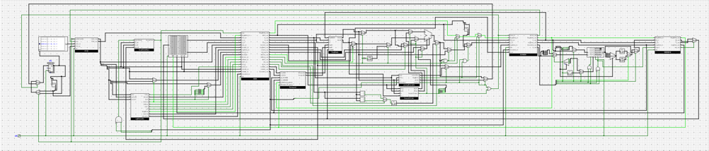
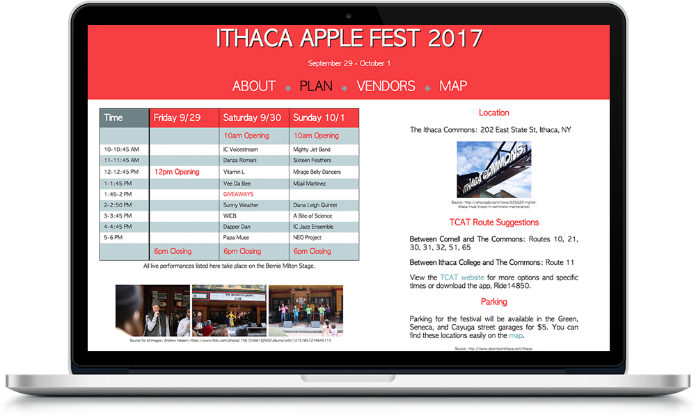
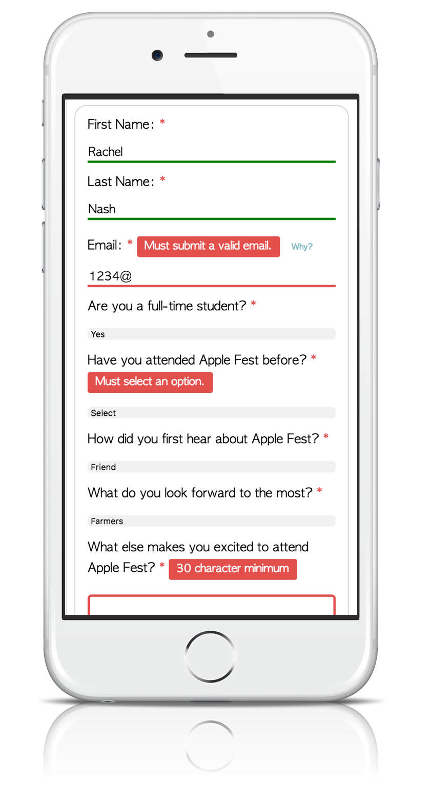

Education
Cornell University, College of Arts and Sciences
Ithaca, NY. Degree Expected 2020.
- B.A. in Computer Science, GPA 3.9
- Major Coursework: Object-Oriented Programming and Data Structures, Discrete Structures, Introduction to Python, Computer System Organization and Programming, Intro Web Design
- Awards: Dean’s List Fall 2016-Spring 2017
- View my full course history.
Lake Norman High School
Mooresville, NC. Graduated 2016.
- Class Rank: 3/466, GPA 3.99 (Weighted 5.01)
- Awards: AP Scholar with Distinction, National Merit Scholar Finalist, “Inquisitive Math Mind” Teacher Award, Honors Graduation Speaker
North Carolina's Governor's School East
Raleigh, NC. June 2015-August 2015.
- Governor's School is a five week summer residential program for intellectually gifted high school students. Read more.
- I was selected to study at the Meredith College campus with a concentration in mathematics. Along with a couple non-math classes, I took mini-courses in non-Euclidean geometry, quantum computing, and combinatorics.
- My research group chose to focus on learning basic topological concepts through knot theory. Primary topics of our research included methods of transformation and simplification (Reidemeister moves) and determining non-equivalency of knots with tri-colorability, Kaufman's bracket polynomial, and the Jones polynomial. At the end of the summer, we presented a summary of our efforts and findings to an audience of 100, with a focus on simplification for beginner understanding. View my presentation.
Projects
Research Connect
- Front-end developer and product design team member for a work-in-progress website that connects professors with students who want to do undergraduate research. Using React.js, HTML, and CSS.
- This is a sub-team of the engineering project team Cornell Design and Tech Initiative (CDTI).
32-bit MIPS Processor

- My partner and I implemented a fully pipelined 5-stage MIPS processor with jumps, branches, data forwarding, and stalling. We used Logisim, a free software for designing circuits. View the design documentation.
- I also constructed an Arithmetic Logic Unit, a component used in the MIPS processor, for an earlier project.
This Website!
Apple Fest Website and User Testing
- Ithaca Apple Festival is a 3-day celebration of the
apple harvest that takes place in Ithaca, NY each Fall.
For my Intro to Web Design class, I re-designed its website
to make it more usable for college students in the Ithaca area.
I focused on responsive design and client and server-side form validation.
- View the GitHub repository or take a look at the site itself.
- To view a version with PHP that contains a user form, you can download this file. If you don't know how to run a PHP file, try this link.


Project Euler
On Campus
- Developer for the engineering project team Cornell Design and Tech Initiative (CDTI).
- Volunteer teacher for Women in Computing at Cornell (WiCC)'s Girls Who Code program, a class to teach local high schoolers the basics of programming while building their confidence and developing their interest in STEM.
- Actress in The Vagina Monologues every year
Skills
- Proficient: Python, Java, HTML, CSS
- Familiar: C, JavaScript, jQuery, React.js, PHP, VBA, Photoshop, Sketch
- Languages: English (native), Italian (intermediate)
Work
TA for Systems Programming (CS 3410)
Teaching Assistant
Ithaca, NY January 2018 - May 2018
- Will hold office hours, grade assignments, and assist students in lab sections for the Systems Programming class.
CU Engineering Success (CUES)
Private Tutor
Cornell University. October 2017-December 2017.
- Tutoring a student in Discrete Structures (CS2800) with CUES, a program to increase the graduation rates of underrepresented minority and first generation engineering students
Geopier Foundation Company
Intern
Mooresville, NC. June 2017- August 2017.
- Proposed and developed an automation for modulus test database entries, reducing time required by 66% while also making it more user-friendly and mathematically accurate. Taught myself VBA to code this in Excel.
- Maintained modulus test database with manual data entry.
- Researched and presented findings on competitors' and licensees' social media accounts.
Intro to Python Workshop
Teacher, Self-started
Mooresville, NC. June 2017- August 2017.
- Wrote lesson plans and assigned homework to teach 4 students coding basics in Python. Met twice/week for 4 weeks and covered topics including object-oriented programming and recursion.
- Researched classroom locations and recruited students with presentations at local high school.
Mathnasium Learning Center
Lead Instructor
Mooresville, NC. August 2012-February 2016.
- Taught students K-12 with emphasis on improving foundational skills and mental math, often balancing up to six students (in a variety of grades) at once.
- Trained new tutors and assisted with administrative work, such as organizing student binders.
Interests
- Linguistics
- Web Design
- Rubik's Cube Speed-Solving
- Art/Design
- Acrylic Painting
- Feminist Activism
- Acting
Test Scores
- ACT: 35
- SAT: 2320
- Math: 800
- Critical Reading: 730
- Writing: 790
- SAT Subject Tests
- Math II: 770
- Literature: 790
Downloadable formal résumé